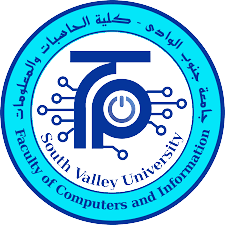

|  | Home | About | Contact Us | sign out |
The Faculty of Computers and Information seeks to raise the scientific, applied and research level in the fields of computer science, information technology and artificial intelligence to achieve a prominent position among the faculties of computers and information and to achieve excellence and innovation in the fields of education, scientific research and community service at the local and regional level, and to be ranked internationally as the best at the regional, local and international levels In academic and applied education and scientific research in the fields of computers and informatics.
The Faculty of Computers and Information is committed to providing distinguished education and research to prepare specialists in the fields of computing, informatics and artificial intelligence with high competitiveness and have a large amount of scientific and applied knowledge and skills that are compatible with the needs of the changing labour market, in addition to deepening scientific awareness and interest in applied research through a partnership with Institutions and companies, and strive to meet the needs of society by providing advisory and research experiences that serve the community in a distinct manner that helps achieve integrated and continuous development .
The Faculty of Computers and Information is committed to providing distinguished education and research to prepare specialists in the fields of computing, informatics and artificial intelligence with high competitiveness and have a large amount of scientific and applied knowledge and skills that are compatible with the needs of the changing labour market, in addition to deepening scientific awareness and interest in applied research through a partnership with Institutions and companies, and strive to meet the needs of society by providing advisory and research experiences that serve the community in a distinct manner that helps achieve integrated and continuous development .